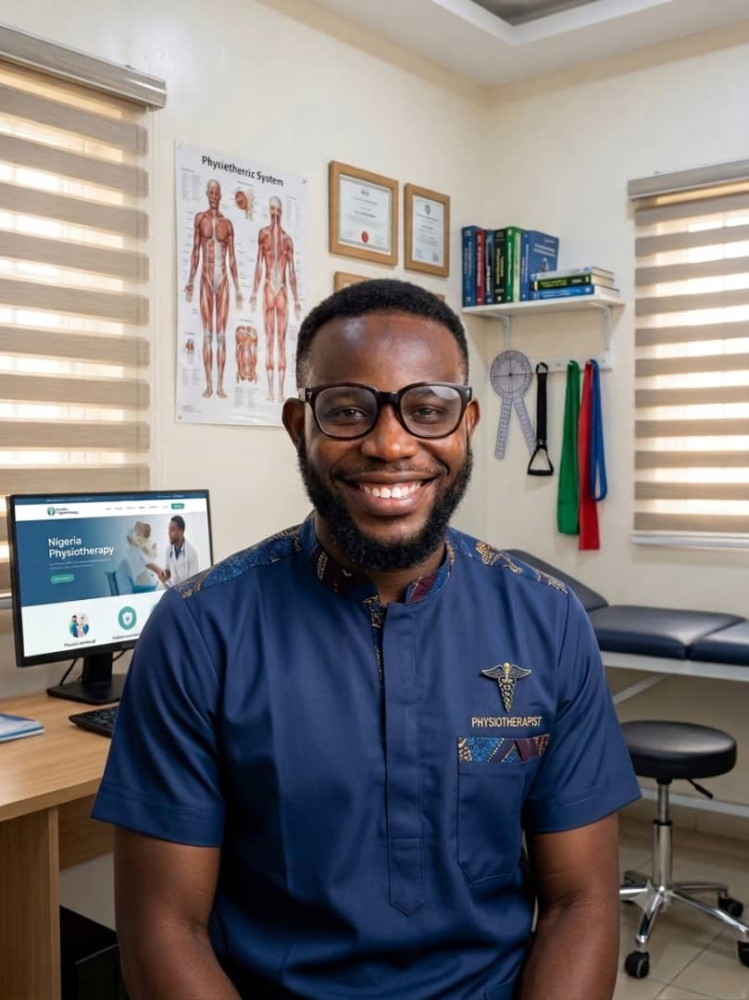

Gbonjubola Yusuff Tunde
Physiotherapist | Researcher | LASAL Foundation Alumnus
My LASAL Foundation Journey: A Legacy of Impact and Lifelong Support
I came to know about the LASAL Foundation during my 200-level studies at the University of Ibadan through the Youth Leader of my town. I applied for the scholarship and was privileged to be among the Foundation's first set of beneficiaries.
At the time, the scholarship was a tremendous relief, easing the financial burden on both my parents and me. It covered my tuition fees, accommodation, and a monthly stipend throughout my university education, allowing me to pursue my studies with greater focus and peace of mind.
Beyond financial support, LASAL became a second family to me. Through its well-structured mentorship programme, I received guidance, encouragement, and direction throughout my academic journey. The Chairperson and Board of Trustees were consistently accessible, always a call or message away whenever I needed support. The Foundation's sponsored physical mentorship sessions, which brought in experienced mentors and experts to train beneficiaries at the head office, also helped us begin planning purposefully for life beyond graduation.
Today, approximately seven years after my graduation, I remain a proud alumnus of the LASAL Foundation. As a physiotherapist, researcher, and professional committed to continuous learning and service, I continue to appreciate the values, opportunities, and support the Foundation invested in me. What makes LASAL particularly remarkable is that its commitment to beneficiaries does not end at graduation; it recognises that education, personal development, and mentorship are lifelong journeys.
LASAL is more than a scholarship foundation. It is a purposeful initiative, a community, and a family that invests in people and their potential. I am deeply grateful to the Chairperson and Board of Trustees for their unwavering commitment, generosity, and continued support.
I pray that Almighty God continues to grant the Chairperson, Board of Trustees, mentors, and the entire LASAL family wisdom, strength, good health, and abundant resources to sustain and expand this noble mission. May the Foundation continue to transform lives, empower generations, and inspire its beneficiaries to become responsible contributors to society.
"The true measure of an investment in education is not only the success of the beneficiary, but the lives that beneficiary goes on to transform."
To LASAL Foundation, thank you for believing in us, investing in our future, and reminding us that meaningful support can become a lifelong legacy.